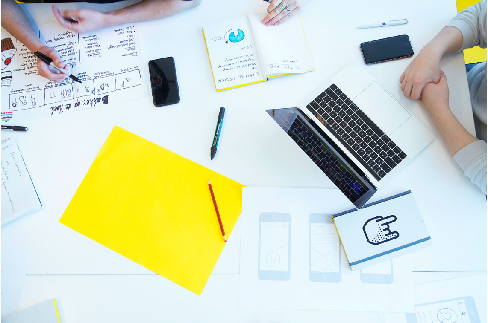

In mijn eerste jaar leerde ik de basis van het vak! Hier mijn top projecten van dit jaar!

| Opleiding | Communication & Multimedia Design |
|---|---|
| Jaar | 1 |
| Datum | september 2022 - juli 2023 |
Voor dit project heb ik onderzoek gedaan naar hoe de User Experience (UX) van de koffiemachines van Maas op de Hogeschool van Amsterdam verbeterd kan worden. Op basis van de resultaten van dit onderzoek heb ik een UX-ontwerpverbetering ontwikkeld, specifiek gericht op rechtenstudenten. Door middel van een experience map heb ik knelpunten in de huidige gebruikerservaring in kaart gebracht en hier concrete oplossingen voor bedacht.
Het doel van de opdrachtgever, Maas, is om de algehele gebruikerservaring van hun koffieapparaten te verbeteren. Mijn opdracht bestond uit het individueel uitvoeren van gebruikersonderzoek en het presenteren van de uitkomsten via een productbiografie en een posterpresentatie. De doelgroep voor dit project bestaat uit HBO-studenten die Rechten of ICT studeren, waarbij ik mij heb gericht op de rechtenstudenten.
ZIE RESULTAATTijdens dit project heb ik een gebruiksvriendelijke interface ontworpen voor onderbouwleerlingen van de middelbare school, waarmee zij via een iPad eenvoudig passende boeken kunnen vinden in de schoolbibliotheek. Het ontwerp is gebaseerd op voorkeuren van de leerlingen en combineert de huisstijl van de opdrachtgever met een aansprekende substijl voor de doelgroep.
Gedurende het proces werkte ik gestructureerd en kreeg ik wekelijks theorie en feedback die ik direct kon toepassen. Dit hielp mij om soepel door het project te gaan. Ik ben trots op het eindresultaat en heb belangrijke vaardigheden ontwikkeld zoals zelfstandig werken, kritisch denken en time management.
ZIE RESULTAATTijdens dit project heb ik de app MatchUp ontworpen: een interactieve toepassing die studenten helpt om voetbalmaatjes te vinden op basis van voorkeuren zoals niveau, positie, locatie en beschikbaarheid. De app is bedoeld om mensen die graag sportief bezig willen blijven, te koppelen aan anderen met vergelijkbare interesses en omstandigheden. Studenten kunnen via de app profielen bekijken, matchen, chatten en afspraken maken om samen te voetballen.
Bij het ontwerp hield ik rekening met inclusiviteit, zoals slechthorenden en overprikkelde gebruikers, door een rustige interface met beperkte kleuren en specifieke toegankelijkheidsopties te implementeren. Het proces werd ondersteund door gebruikersonderzoek, brainstormmethoden en wekelijkse feedbackmomenten. Hierdoor ontstond een doordacht prototype dat sport, sociaal contact en gebruiksgemak samenbrengt.
ZIE RESULTAATWil je meer van mij zien? Klik hieronder om meer projecten te bekijken!
BEKIJK MEER PROJECTEN